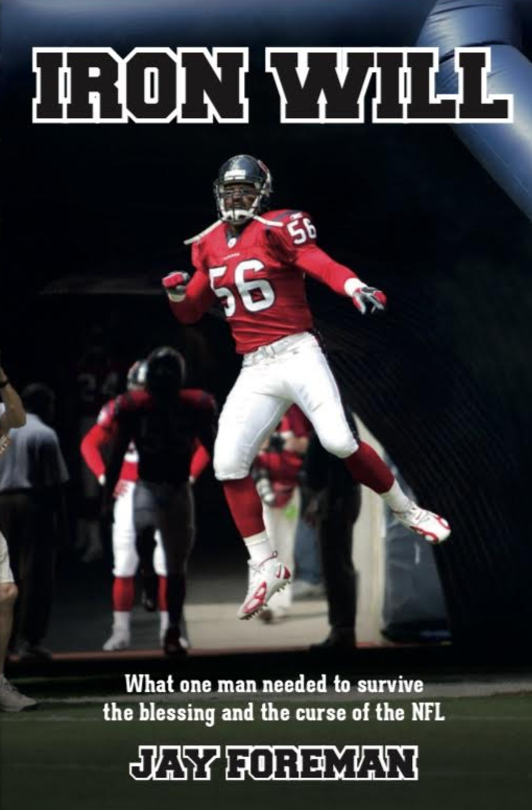

Sheer Determination
In his memoir, Iron Will, Jay Foreman shares his unique experiences as a child of a famous athlete, his experiences as a rising star in both college football and the NFL and shares how anyone from any background can experience adversity and ultimately overcome it. Iron Will reveals how success in the limelight sent Jay’s life into a tailspin and dramatically changed the people around him. Now, looking for and attaining closure after a long football life, Foreman offers a cautionary tale for athletes and families who may get swallowed up into the fast professional life. He hopes his own failures and life lessons can be used to help impact people in a positive way and ultimately lead them to success.